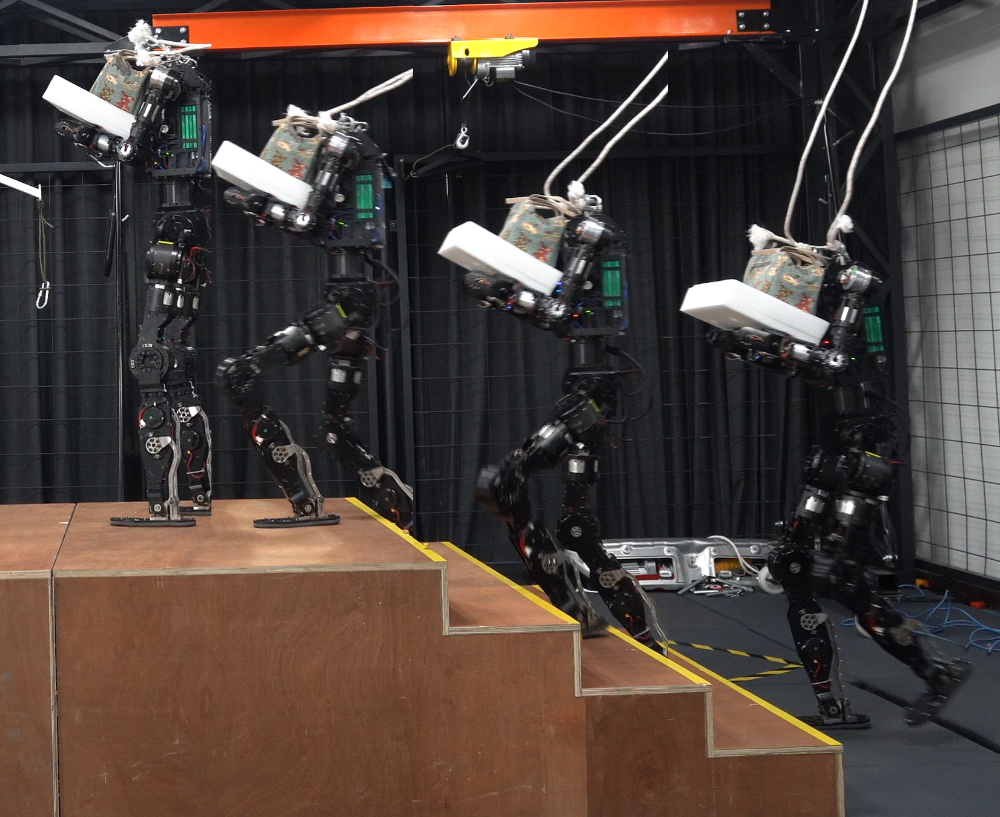
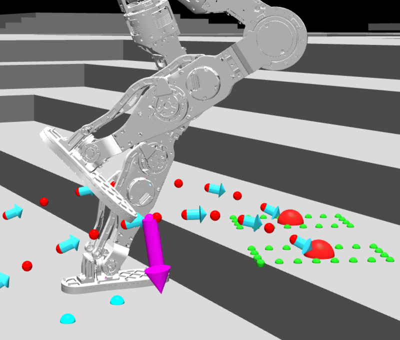
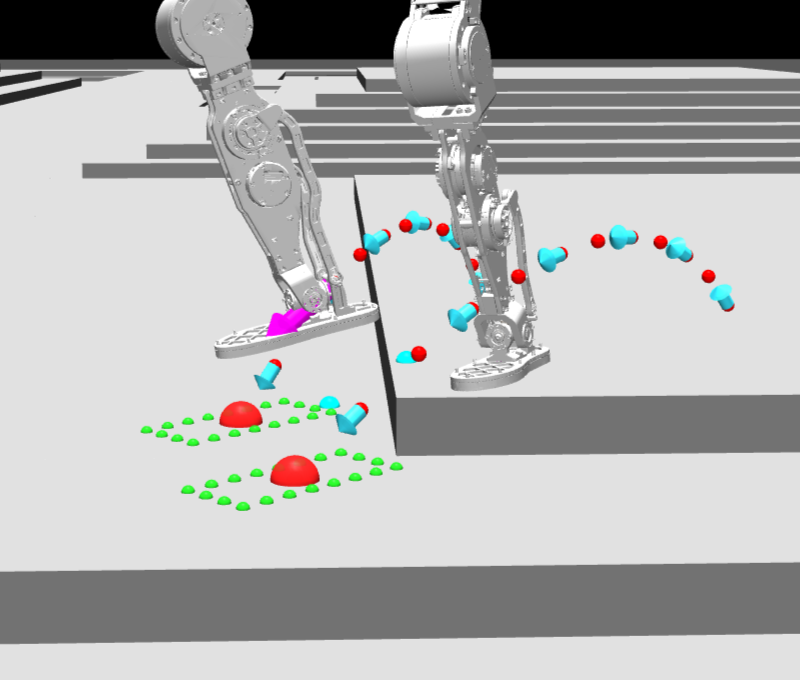
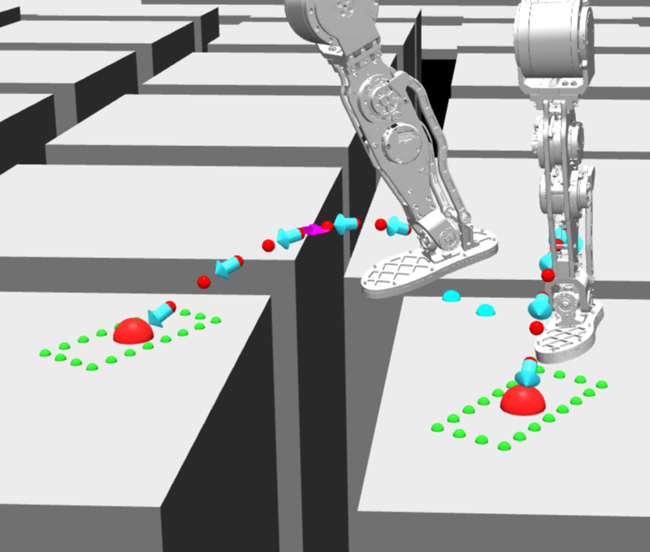
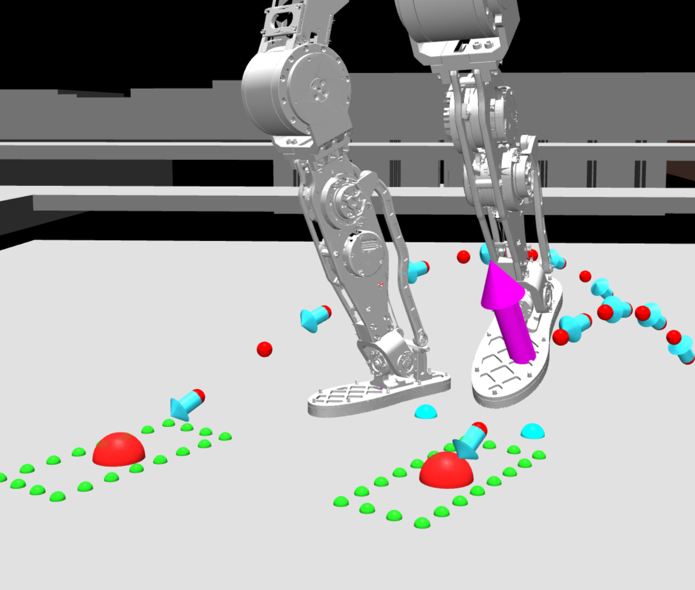
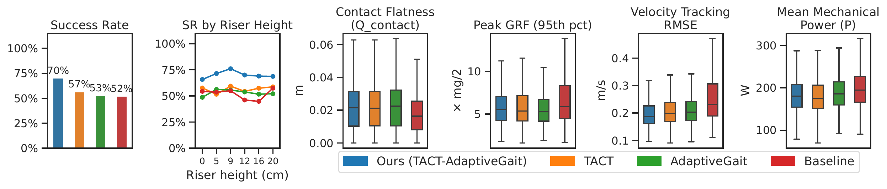
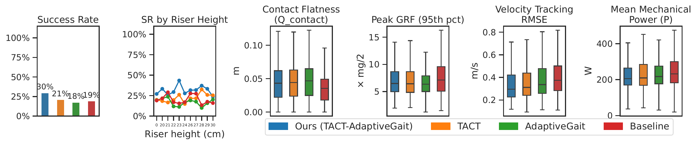
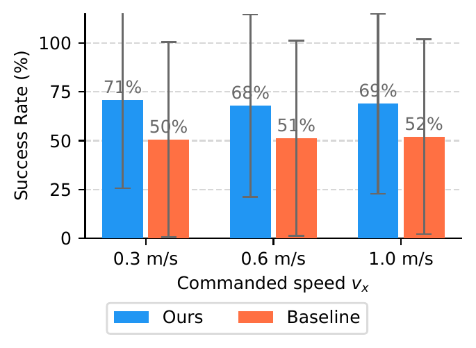
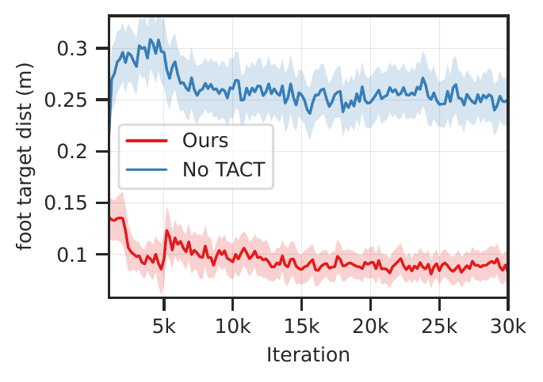
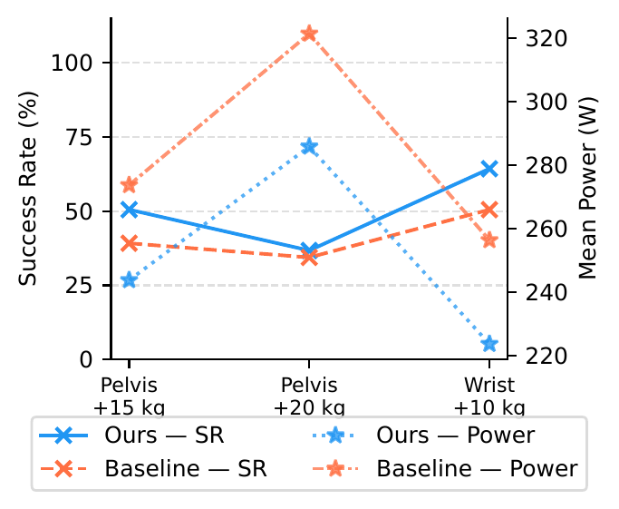

TACTful
Multi-Channel Terrain Affordance and Compliance Training
for Payload-Robust Perceptive Humanoid Locomotion
CoRL 2026 · Under Review
Anonymous Authors · Anonymous Institution
Act 1 — The Problem
▶
REPLACE: External clip
Blind locomotion on stairs
Any public clip of a legged robot
failing on a staircase without perception
Blind Locomotion
Is Not Enough
On flat ground — works well.
On structured terrain:
- Sole straddles step edge → line contact
- Friction cone admissibility collapses
- GRF needed to recover scales with total weight
Without foothold quality awareness,
the robot has no strategy for stairs.
Act 1 — The Problem
Perceptive Locomotion — Still Not Enough
▶
REPLACE: Perceptive policy
navigating stairs — no payload
e.g. depth-camera policy, any lab
✓ TERRAIN — succeeds
▶
REPLACE: Same policy
with payload — struggling or falling
Use own sim baseline (no compliance training)
✗ + PAYLOAD — fails
CoM shifts · trunk tilts · capture point diverges · the policy has no answer
Our Approach
One training run.
Terrain + Payload.
Multi-channel terrain awareness & compliance — learned end-to-end with standard PPO.
1.0 m/s
on stairs
0.20 m risers
0-shot
sim-to-real
transfer
No distillation · No teacher-student staging · No force sensor
Act 2 — Method
System Overview
DCM Foothold Planner — terrain-optimal landing targets + Bézier swing
Wrench Compliance Scheduler — virtual force + moment at load point
Act 2 — Method
Multi-Channel Terrain Cost
Planner minimises:
$\mathcal{J}_i = \alpha_\text{pos}\,d_{\text{pos},i} + \alpha_\text{dcm}\,d_{\text{dcm},i}
+ \alpha_E E_i + \alpha_Q Q_i + \alpha_M M_i - \alpha_\text{climb}\,b_i$

Terrain affordance map — footholds coloured by cost
$Q_i$ — Flatness
Elevation range over footprint kernel. Flags edge landings where friction-cone admissibility collapses.
$E_i$ — Steepness
Max-pooled Sobel gradient. Propagates the worst riser gradient within the footprint.
$M_i$ — Height Feasibility
Quadratic penalty above velocity-aware $h^*_\text{eff}(v_x)$. Low speed = reduced reach.
$b_i$ — Climb Bonus
Speed-gated reward for stepping up onto reachable treads, capped at $h^*_\text{eff}$.
Act 2 — Method
Bézier Swing & Tangent-Guided Foot Orientation

(a) Step-up — apex over riser face

(b) Step-down — extended horizontal travel

(c) Gap crossing

(d) Flat terrain — symmetric arc
Apex $xy$ biased toward the higher endpoint:
$\text{bias} = \mathrm{clip}(0.5 + \kappa\,\Delta z / h^*_\text{max},\,b_\text{min},\,b_\text{max})$
Pre-apex orientation
$\dot{\mathbf{p}}$ rotated 90° in sagittal plane → sole clears riser, reduces toe-strike risk.
Post-apex orientation
$\hat{\mathbf{t}}_f = \dot{\mathbf{p}}/\|\dot{\mathbf{p}}\|$ → flat-sole tread landing.
Act 2 — Method
Lower-Body Compliance Training
Key insight.
Payload moment $\boldsymbol{\tau} = \mathbf{r}_\text{load}\times\mathbf{F}$ tilts the trunk.
Under LIPM, CoM offset grows by $e^{\omega_0 T_\text{step}} > 2$ per step —
more destabilising than an equivalent translational offset.
Virtual spring-damper at load point:
$\mathbf{F}_\text{ext}(t) = k(\mathbf{p}_a - \mathbf{p}_\text{load}) - c\,\dot{\mathbf{p}}_\text{load}$
Applied at $\mathbf{p}_\text{load}$ auto-generates $\boldsymbol{\tau}_\text{ext}$.
Compliance reward:
$r_\text{comply} = -(z_\text{pel} - z^*_v)^2 - (\varphi_B - \varphi^*_v)^2 - (\psi_B - \psi^*_v)^2$
Two-component wrench sampling
Body-attached (60 %): cosine-power lobe toward $-\hat{\mathbf{z}}$ — vest/waist loads.
Arm-extended (40 %): forward-biased half-ellipsoid — large moment arms.
+ 10 % isotropic coverage.
What the policy learns
Yield pelvis height to downward force;
yield trunk pitch/roll to induced moment.
Zero-shot at deployment — no force sensor, no retraining.
Act 2 — Method
Training Setup
PPO
standard
no distillation
30 Hz
depth CNN
4-frame stack
50 Hz
policy freq.
on hardware
0-shot
sim-to-real
no fine-tuning
No teacher-student staging · Asymmetric actor-critic · Domain randomization for sim-to-real gap
Act 3 — Simulation
SIMULATION RESULTS — Payload Generalization
▶
No Payload
Baseline
Stair traversal · 1.0 m/s
Drop file: sim_no_payload.mp4
Baseline · no load
▶
Front-Mounted Backpack
5 kg · pelvis drops, absorbed
Drop file: sim_front_backpack_5kg.mp4
Front · 5 kg
▶
Rear-Mounted Backpack
5 kg · trunk pitches back
Drop file: sim_rear_backpack_5kg.mp4
Rear · 5 kg
Act 3 — Simulation
SIMULATION RESULTS — Challenging Scenarios
▶
Front + Rear Backpacks
10 kg combined · zero-shot
Drop file: sim_both_backpacks_10kg.mp4
Front + Rear · 10 kg
▶
Basket of Weighted Blocks
5 × 1 kg blocks · dynamic shifting
Drop file: sim_basket_5kg.mp4
Basket · 5 kg
▶
Car Door
~5 kg · largest moment arm
Drop file: sim_car_door_5kg.mp4
Car Door · ~5 kg
All zero-shot · no payload-specific fine-tuning · single training run
Act 4 — Real Robot
Real Robot · Zero-shot from simulation
Stair traversal · risers up to 0.20 m · 1.0 m/s
Act 4 — Real Robot
Real Robot · Moment-dominated load
Wrist-mounted tray · 7 kg
65% SR vs. 50% baseline
Act 4 — Real Robot
20 kg
Full expedition backpack
Real Robot · Zero-shot
Rear-mounted backpack, 20 kg · descending stairs
Act 4 — Real Robot
Real Robot · Zero-shot
20 kg backpack · ascending stairs
Act 5 — Results
Terrain Traversal Ablation

Standard terrain (0.05–0.20 m risers)

Hard terrain, OOD (0.20–0.30 m risers)
2.8×
foot-target
without TACT

SR vs. speed — gap is speed-invariant

Foot-target distance during training
Adaptive gait alone falls below the blind baseline on hard terrain (18% vs. 19%) —
re-timing without terrain guidance is actively harmful at kinematic limits.
Act 5 — Results
Payload Generalization — Zero-Shot

SR (%) and mean power (W) vs. payload condition on stairs · 100 episodes each
Pelvis +15 kg — moderate centered load
50% vs. 38% SR · 247 vs. 277 W
Compliance absorbs the downward wrench.
Pelvis +20 kg — near distribution boundary
~37% vs. ~35% SR (parity) · 293 vs. 320 W
−27 W retained: partial compliance preserved.
Wrist +10 kg ✦ largest margin
65% vs. 50% SR · 223 vs. 259 W
Arm-extended wrench samples target moment-dominated loads directly.
Act 5 — Results
Limitations
- Quantitative ablations in simulation only — hardware demos are qualitative
- Hard-terrain SR reaches only 30% on risers 0.22–0.28 m — tall stairs remain challenging
- Compliance benefit saturates at ~20 kg centered load (near training distribution boundary)
- Terrain-cost weights are hand-tuned; forward-facing depth camera only — no lateral coverage
- Tangent-guided orientation degrades on slopes >~15° (arc tangent ≠ surface normal)
Next: quantitative real-world evaluation · terrain × payload coupling study
TACTful
One training run · Structured terrain · Heavy payload · Real robot
Multi-Channel Terrain Cost
Compliance Without Force Sensors
Zero-Shot Sim-to-Real
fai-rl-tech.github.io/tact-locomotion.github.io